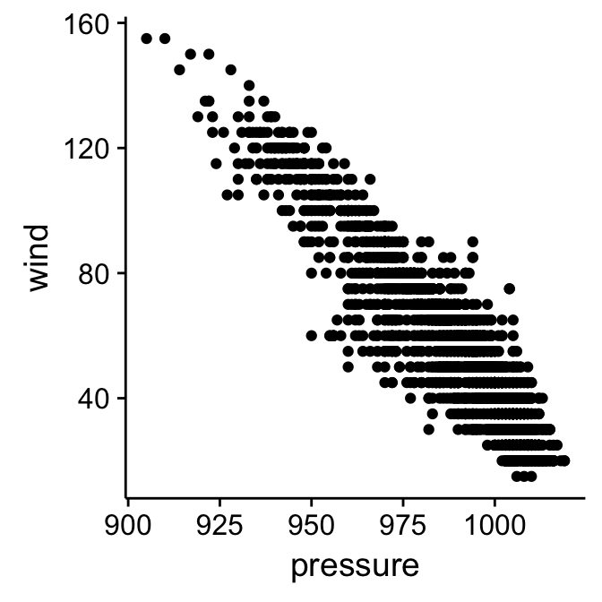
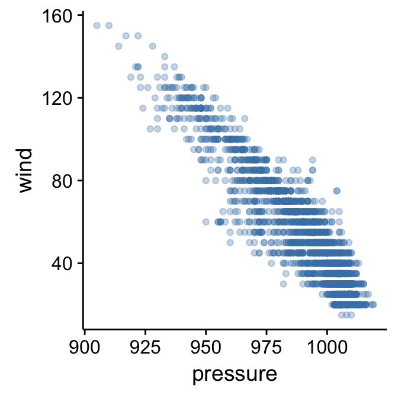
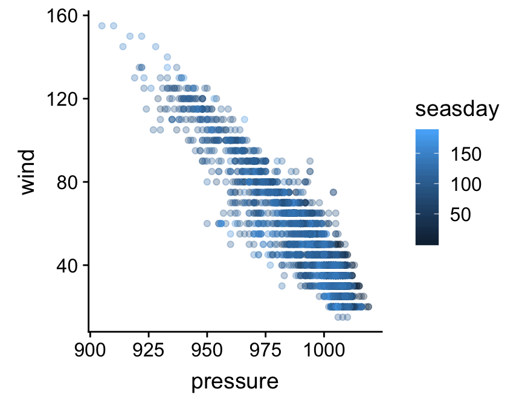
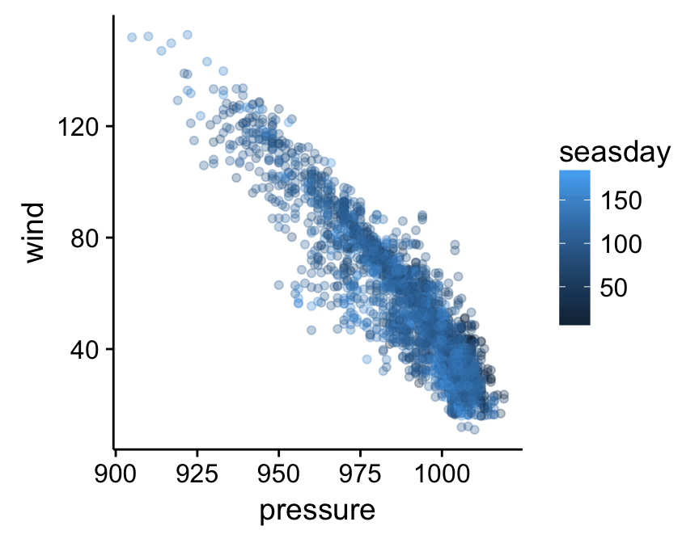
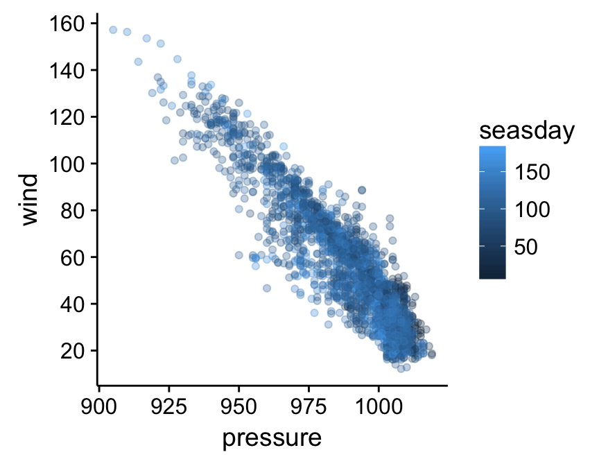
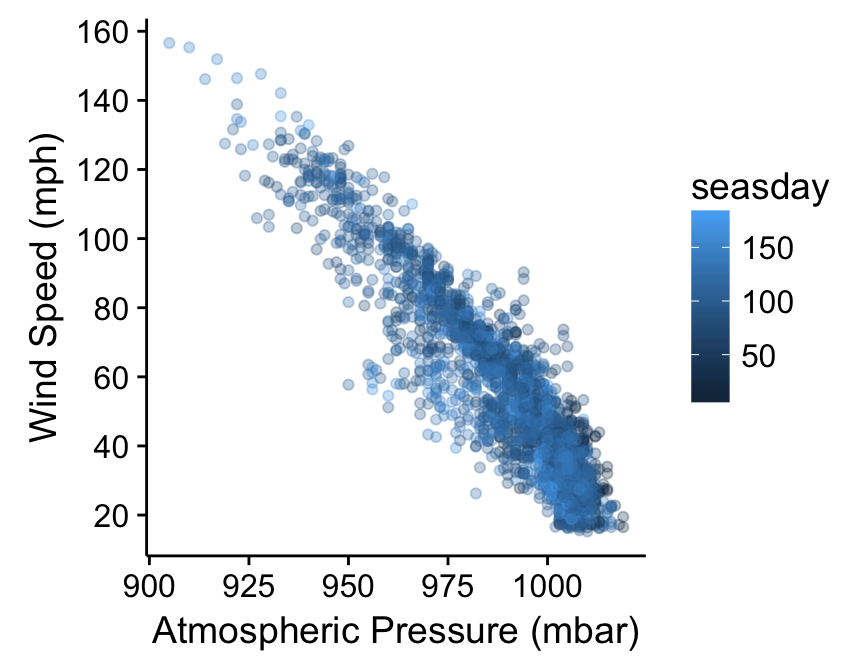
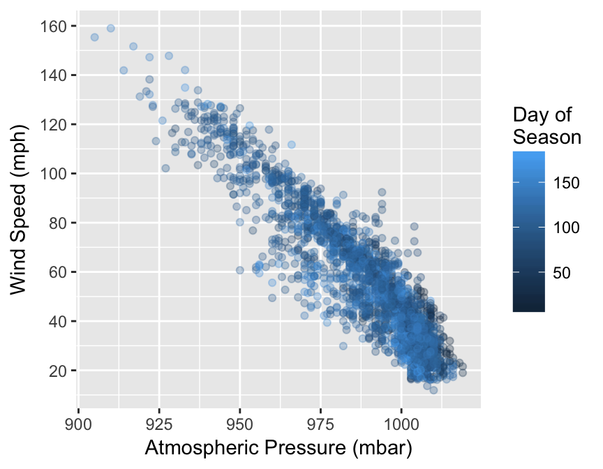
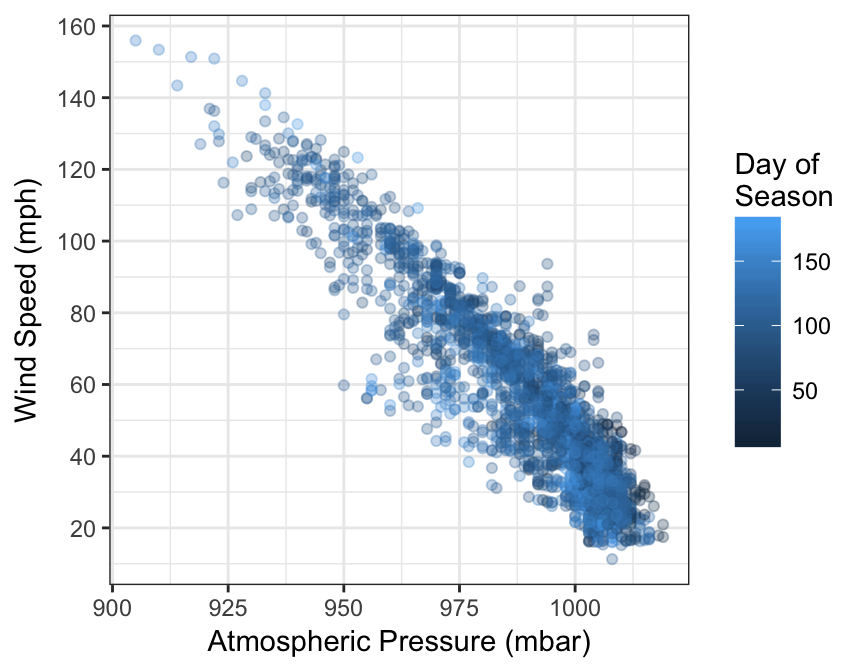
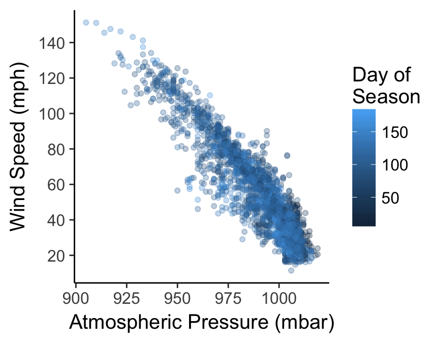

Chapter 19 Customising plots
The default formatting used by ggplot2 is generally fine for exploratory purposes. In fact, although they aren’t universally popular, the defaults are carefully chosen to ensure that the information in a plot is easy to discern. These choices are a little unconventional though. For example, published figures usually use a white background. For this reason, we often need to change the appearance of a plot once we’re ready to include it in a report.
Our aim in this chapter is to learn a little bit about the underlying logic of how to customise ggplot2. We aren’t going to attempt to cover the many different permutations. Instead, we’ll focus on the main principles underlying the different routes to customisation. We’ll build on these as we review a range of different visualisations in later chapters. Using the storms data once again, we’ll work on improving the simple scatter plot initially produced in the Introduction to ggplot2 chapter:
# 1. make the storms data available
library(nasaweather)
# 2. plot wind speed against atmospheric pressure
ggplot(storms, aes(x = pressure, y = wind)) + geom_point()
19.1 Working with layer specific geom properties
What do we do if we if we need to change the properties of a geom? We’re using the point geom at the moment. How might we change the colour or size of points in our scatter plot? It’s quite intuitive—we set the appropriate arguments in the geom_point function. Let’s rebuild our example, this time setting the colour, size and transparency of points:
ggplot(storms, aes(x = pressure, y = wind)) +
geom_point(colour = "steelblue", size = 1.5, alpha = 0.3)
The point colour is set with the colour argument. There are many ways to specify colours in R, but if we only need to specify a few the simplest is to use a name R recognises. The point size is specified with the size argument. The baseline is 1, and so here we increased the point size by assigning this a value of 1.5. Finally, we made the points somewhat transparent by setting the value of the alpha argument to be less than 1. In graphical systems the ‘alpha channel’ essentially specifies transparency of something—a value of 0 is taken to mean ‘completely invisible’ and a value of 1 means ‘completely opaque’.
Built-in colours in R
There is nothing special about “steelblue” other than the fact that it is colour name ‘known’ to R. There are over 650 colour names built-in to R. To see them, we can use a function called colours to print these to the Console. Try it.
There are other arguments—such as fill and shape—that can be used to adjust the way the points are rendered. We won’t look at these here. The best way to learn how these work is to simply experiment with them.
The key message to take away from this little customisation example is this: if we want to set the properties of a geom in a particular layer, we do so by specifying the appropriate arguments in the geom_NAME function that defines that layer. We do not change the arguments passed to the ggplot function.
How should we format ggplot2 code?
Take another look at that last example. Notice that we split the ggplot2 definition over two lines, placing each function on its own line. The whole thing will still be treated as a single expression when we do this because each line, apart from the last one, ends in a +. R doesn’t care about white space. As long as we leave the + at the end of each line R will consider each new line to be part of the same definition. Splitting the different parts of a graphical object definition across lines like this is a very good idea. It makes everything more readable and helps us spot errors. This way of formatting ggplot2 code is pretty much essential once we start working with complex plots. We will always use this convention from now on.
19.1.1 The relationship between aesthetics and geom properties.
We’ve seen that we can introduce new information into a plot by setting up additional aesthetics. In the previous chapter we added the information about the time of year an observation was made by mapping the seasday variable to the colour aesthetic. Let’s try to add this to our new figure:
ggplot(storms, aes(x = pressure, y = wind, colour = seasday)) +
geom_point(colour = "steelblue", size = 1.5, alpha = 0.3)
This doesn’t seem to have worked as hoped as the resulting scatter plot looks exactly like the previous one, i.e. all the points are the same colour. What went wrong? We’re still setting the colour argument of geom_point. When we add a layer, any layer-specific properties that we set will override the aesthetic mappings. We need to remove the colour = "steelblue" from inside geom_point to remedy this:
ggplot(storms, aes(x = pressure, y = wind, colour = seasday)) +
geom_point(size = 1.5, alpha = 0.3)
That’s what we were aiming for. The points are now coloured again according to how they are associated with early (dark blue) or late (light blue) season observations.
The key message to take away from this example is this: if we decide to change the properties of the geom in a particular layer, we will override any aesthetic mappings that conflict with our choice of customisation.
19.2 Working with layer specific position adjustments
What else might we do to make the plot a little easier to read? Wind speed is only measured to the nearest 5 mph, which is causing many points to be plotted on top of one another. One option to solve this problem is to randomly shuffle the vertical position of each point a little to avoid this over-plotting. This is called ‘jittering’. We do this by specifying a position adjustment in our layer. Remember, position adjustments are part of individual layers, not the whole plot. Here’s one way to do this:
ggplot(storms, aes(x = pressure, y = wind, colour = seasday)) +
geom_point(alpha = 0.3, size = 1.5, position = position_jitter(w = 0, h = 4))
We used the position_jitter function to associate the necessary information with the position argument of geom_point. The w (’w’idth) and h (’h’eight) arguments of the position_jitter function specify how much to jitter points in the x and y directions. The resulting plot is a little easier to read.
The key message to take away from this second customisation example is this: every layer has its own position adjustment, which we can change by setting the position argument inside the geom_NAME function that defines the corresponding layer. Just keep in mind that, very often, there’s no need to mess about with position adjustments (the defaults are fine).
19.3 Working with plot specific scales
Let’s look at a different way to tweak our plot. So far we have been focussing on customisations that apply in a layer specific manner (geom properties and position adjustments). A second class of customisation applies to the whole plot. Specifically, this new type of customisation applies to the scales used in the plot. Here’s what we said about scales in the last chapter:
The scale controls how the data is mapped to the aesthetic attributes. A scale takes the data and converts it into something we can perceive, such as an x/y location, or the colour and size of points in a plot. A scale must be defined for every aesthetic in a plot.
Every aesthetic has a scale associated with it. We adjust ‘how the data is mapped to the aesthetic attributes’ by changing some aspect of the corresponding scale. This will seem very abstract at first. As always it’s best understood by example.
We’re going to adjust the scale associated y axis aesthetic (‘y’). Specifically, we want to increase the number of ‘guides’ (the horizontal lines inside the plot) and their accompanying labels. Here is how we place guides at 20, 40, 60, 80, etc, on the y axis:
ggplot(storms, aes(x = pressure, y = wind, colour = seasday)) +
geom_point(alpha = 0.3, size = 1.5, position = position_jitter(w = 0, h = 4)) +
scale_y_continuous(breaks = seq(20, 160, by = 20))
What’s going on here? The functions that adjust a scale all have the general form scale_XX_YY. The XX bit in the name must reference the relevant aesthetics, while the YY part refers to the kind of scale we want to define. The aesthetic we wanted to alter was the y axis. It turns out (though it probably wasn’t obvious) that this is a continuous scale because wind is a numeric variable. This means we had to use the scale_y_continuous function to tweak the y axis (there is a scale_x_continuous function for altering the x axis). The breaks argument just takes a vector containing a numeric sequence and uses this to specify where the guides should be drawn.
Scales are the hardest aspect of ggplot2 to get to grips with. For one, there are a lot of them—type scale_ at the Console and hit the tab key to see how many there are. Each of them can take a variety of different arguments. Luckily, the defaults used by ggplot2 are often good enough that we can arrive at a good plot without having to manipulate the scales. We’ll take a look at a few more options as we progress through different visualisations.
The key message to take away from this third customisation example is this: every aesthetic mapping has a scale associated with it. If we want to change how the information associated with an aesthetic is displayed we should change the corresponding scale. For example, if we want to change the way point colours are associated with the seasday variable we have to use one of the scale_colour_YY functions.
19.4 Adding titles and labels
What else might we like to tweak? Look at the x and y axis labels. These are just the names of the data variables used to define the aesthetic mapping. These labels aren’t too bad in this case, but they could be more informative. We know “wind” stands for “wind speed”, but someone reading this figure may not realise this immediately. There are also no units – generally a big no-no for serious figures. Here is how to set the axis labels:
ggplot(storms, aes(x = pressure, y = wind, colour = seasday)) +
geom_point(alpha = 0.3, size = 1.5, position = position_jitter(w = 0, h = 4)) +
scale_y_continuous(breaks = seq(20, 160, by = 20)) +
xlab("Atmospheric Pressure (mbar)") + ylab("Wind Speed (mph)")
The axes labels are a feature of the whole plot. They do not belong to a particular layer. This is why we don’t alter axis labels by passing arguments to the function that built a layer (geom_point in this case). Instead, we use the xlab and ylab functions to set the x and y labels, respectively, using + to add them to our graphical object. If we need to add a title to a graph we can use the ggtitle function in the same way.
The labs function provides a more flexible alternative to xlab and ylab. It’s more flexible because labs can be used to change the label of every aesthetic in the plot. For example, if we want to set the labels of the x and y axes, and the label associated with seasday, we use:
ggplot(storms, aes(x = pressure, y = wind, colour = seasday)) +
geom_point(alpha = 0.3, size = 1.5, position = position_jitter(w = 0, h = 4)) +
scale_y_continuous(breaks = seq(20, 160, by = 20)) +
labs(x = "Atmospheric Pressure (mbar)",
y = "Wind Speed (mph)",
colour = "Day of \nSeason")
We snuck one last trick into that last example. Notice that the “Day of Season” label is split over two lines. We did this by inserting the special sequnce \n into the label text. The \n inside a quoted label tells R to start a new line.
19.5 Themes
The final route to customisation we’ll consider concerns something called the ‘theme’ of a plot. We haven’t considered the ggplot2 theme system at all yet. In simple terms, ggplot2 themes deal with the visual aspects of a plot that aren’t directly handled by adjusting geom properties or scales, i.e. the ‘non-data’ parts of a plot. This includes features such as the colour of the plotting region and the grid lines, whether or not those grid lines are even displayed, the position of labels, the font used in labels, and so on.
The ggplot2 theme system is extremely powerful. Once we know how to use it, we can set up a custom theme to meet our requirements and then apply it as needed with very little effort. However, it’s not an entirely trivial thing to learn about because there are so many components of every plot. Fortunately there are a range of themes built into ggplot2 that are easily good enough for producing publication ready figures. Let’s assume we have made a plot object final_plt containing all the information and data formatting we want:
final_plt <-
ggplot(storms, aes(x = pressure, y = wind, colour = seasday)) +
geom_point(alpha = 0.3, size = 1.5, position = position_jitter(w = 0, h = 4)) +
scale_y_continuous(breaks = seq(20, 160, by = 20)) +
labs(x = "Atmospheric Pressure (mbar)",
y = "Wind Speed (mph)",
colour = "Day of \nSeason")Here’s how to use the built in themes to alter the themes used to plot the final_plt object:
final_plt + theme_bw()
In this example we use + with the theme_bw function to use the built in ‘black and white’ theme. This removes the grey background that so many people dislike in ggplot2.
There aren’t that many themes built into ggplot2—type theme_ at the Console and hit the tab key to see the others. One popular alternative to theme_bw is the ‘classic’ theme, via theme_classic:
final_plt + theme_classic(base_size = 15)
This produces a very stripped down plot that’s much closer to those produced by the base graphics system. Notice that we did one more thing here: we set the base_size argument to 15 to increase the size of all the text in the figure (the default is 11). This can be used with any theme_XX function to quickly change the relative size of all the text in a plot.